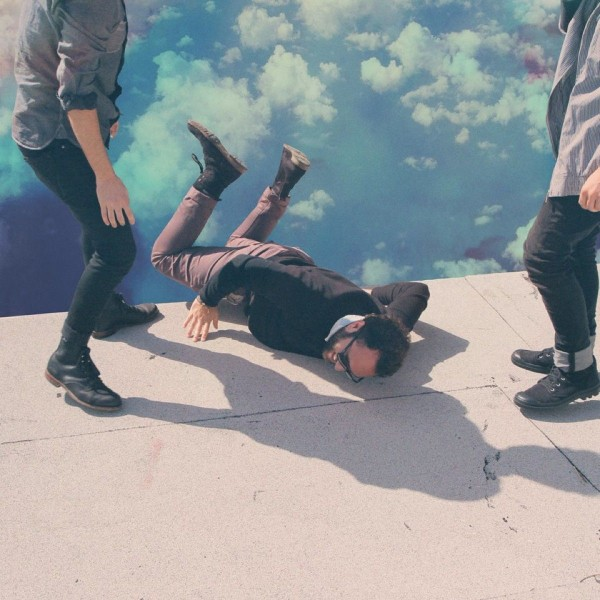
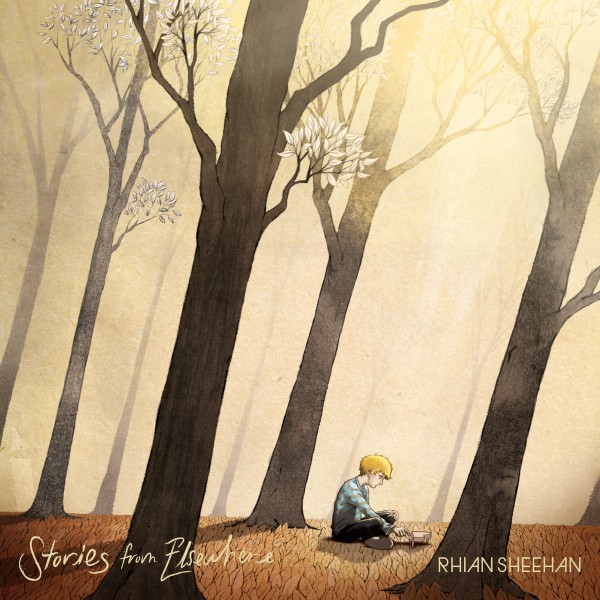
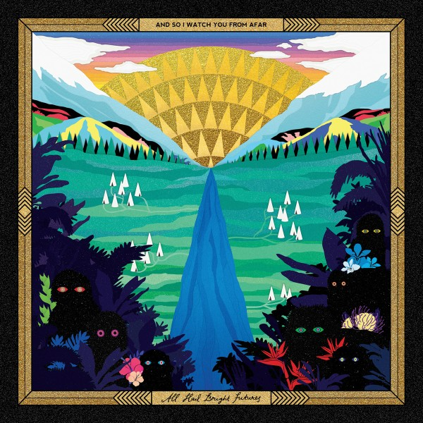
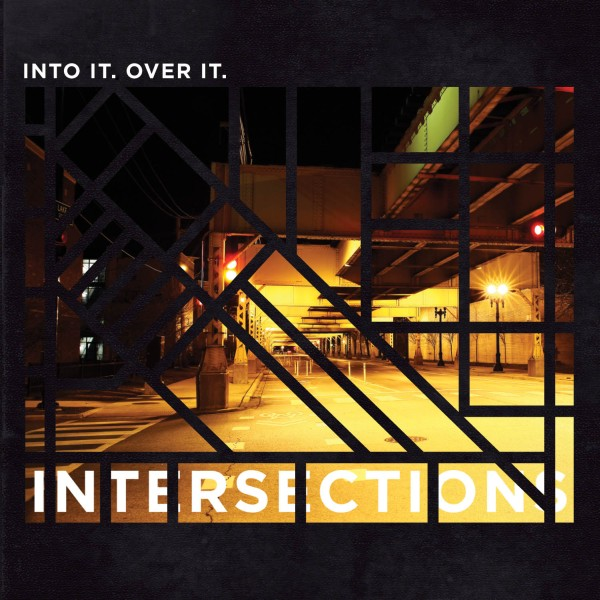
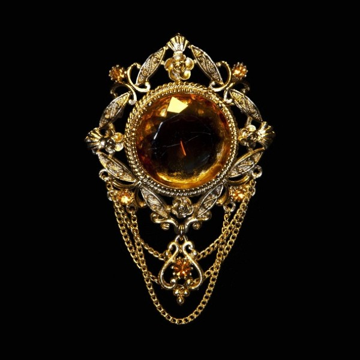
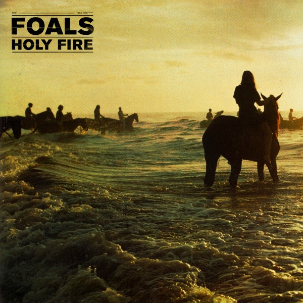
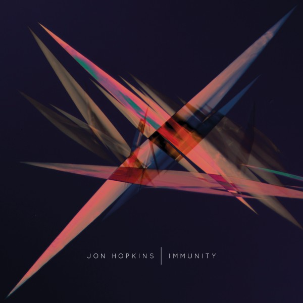
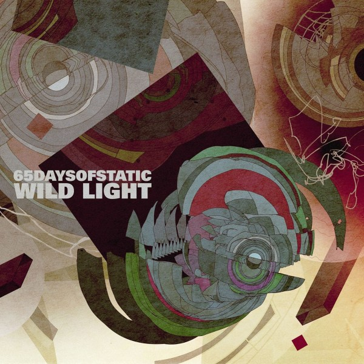
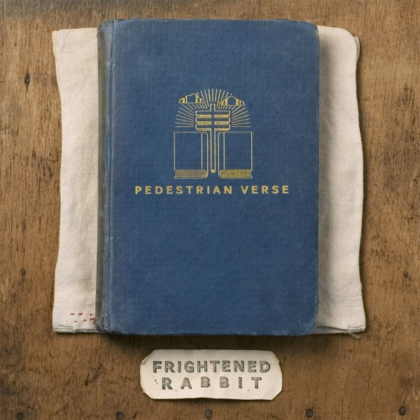
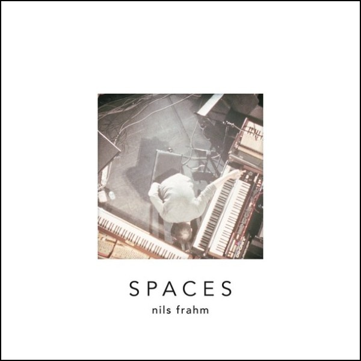

Albums of 2013
10
Local Natives
Hummingbird
Following on from their 2009 debut album, indie rockers Local Natives' second album is a step up in song writing maturity.
"Hummingbird" is rife with intimate, haunting moments, complemented with a multitude of soaring crescendos.
Recommended for fans of The National, The Antlers and Arcade Fire.

9
Rhian Sheehan
Stories From Elsewhere
Evocative instrumental soundscapes from New Zealand producer Rhian Sheehan.
The follow-up to the excellent "Standing in Silence" (2008), Sheehan describes the album as "a collection of sonic stories"
and it's easy to understand why. Listening through the album and exploring the stunning sleeve artwork, it's almost impossible not
to be transported 'elsewhere' with each and every track. Recommended for fans of Sigur Ros and atmospheric, uplifting soundtrack scores.

8
And So I Watch You From Afar
All Hail Bright Futures
Northern Ireland's own ASIWYFA have much to celebrate. Following a number of well received instrumental rock albums which firmly identified the
band's own sound and avoided the generic post-rock formula, as well as consistently pulling off one of the best and charismatic live shows around,
the band has toured the world and played on stage with some of the biggest names around. "All Hail Bright Futures", then, truly feels like an album
that captures this need for celebration. Upbeat, fun and energetic - with this album ASIWYFA are throwing a party, and everyone is invited.

7
Into It. Over It.
Intersections
Having spent my later years of adolescence listening to lots of the likes of Jimmy Eat World and Death Cab For Cutie, "Intersections" is an
album that takes me right back to that time, overlapping with many of the musical and lyrical themes of said artists. Call it 'emo' if you must,
but there's true maturity and eloquence to Evan Weiss' song-writing, both lyrically and melodically.

6
Fuck Buttons' album "Tarot Sport" featured on my end-of-year top 10 in 2009. The highlight of that album for me was the uplifting and euphoric "Olympians",
a track that fittingly ended up being used during the London 2012 Olympics opening ceremony. This year's album "Slow Focus" is an altogether different beast,
ditching any hint of uplift and joy for ominousness and menace. An epic, dark, atmospheric electronic journey that's well worth the ride.

5
This album was a huge surprise for me. Whilst I enjoyed bits and pieces of "Antidotes" and "Total Life Forever", I didn't consider myself a fan of Foals.
"Holy Fire" certainly changed all that, as it's a truly solid work from start to finish. Big hitters such as "Inhaler" and "My Number" are perfectly complemented by the
likes of the sombre and stirring "Stepson" and closer "Moon". I'm completely sold.

4
I had the pleasure of discovering Jon Hopkins' music a few years back when I was recommended his album "Insides". From there, diving into his back catalogue revealed a wealth
of both impressively complex dubby electronic music (see album "Insides"), coupled with a clear talent for creating beautiful, relaxing ambient music (see album "Opalescent"),
not to mention his fantastic collaborations with scottish folk musician King Creosote. With "Immunity", Hopkins takes his talents to new heights, creating an album of two halves:
the first, a selection of glitchy, intelligently complex electronic techno; the second, a perfect display of the atmospheric beauty and evocation that Hopkins is capable of with his ambient works.
The contrast between the album's most driving and pumping moment "Open Eye Signal" (probably the finest produced dance track you'll hear this year)
and the most reflective, quiet moment "Abandon Window" (sampling the sound of distant fireworks over a beautifully minimal piano melody) is somewhat astonishing.
And yet, as a collection, "Immunity" comes together wonderfully. Witnessing Mr Hopkins play during Derry's Celtronic festival this year was certainly an experience
I won't forget in a hurry, thanks in large part to the pure brilliance of the tracks produced on this album.

3
65daysofstatic
Wild Light
65daysofstatic once stated that the origin of their band name was an unreleased John Carpenter film, for which they had formed the band to create the soundtrack to. Whether or not
this is true is of some debate (chances are it's probably not true), but listening to "Wild Light", it's easy to envisage the music being part of an epic futuristic
sci-fi movie thanks to the driving, ominous melodies and atmospheric soundscapes. 65 have really perfected their craft and there are plenty of incredible moments in
this album: the start-stop opening of blips and blasts on "Prisms"; the epic breakdown and build in "Sleepwalk City"; the deep, menacing bass drop in "Unmake The Wild Light"; the euphoric
sweeping synths of closer "Safe Passage". It's certainly the most ambitiously complex and dramatic collection of songs the band has put together in their career, and that's
no mean feat considering their rich back catalogue.

2
Frightened Rabbit
Pedestrian Verse
In terms of number of plays this year, "Pedestrian Verse" definitely leads the pack for me by a long shot. When this album first came out, I couldn't stop listening to it.
Scottish indie rockers Frightened Rabbit have long been a favourite of mine, with their album "Midnight Organ Fight" sitting firmly on my favourite records of all-time shelf, but
"Pedestrian Verse" still managed to blow away my expectations. It's the perfect blend of catchy hooks, anthemic choruses and intelligent, witty lyrics, combined with the fact
that almost every track on this album could be a single in its own right.

1
It's a little strange to say that my favourite album of this year is a live album. But it is. And it is brilliant. Berlin based composer and pianist Nils Frahm has released several albums and EPs in
the past, the highlight of which for me was "Felt" - an album recorded quietly and late at night, so as not to disturb the neighbours, resulting in a beautifully hushed and intimate record. "Spaces", however, is
a collection of recordings from Frahm's live concerts, allowing him to fully unleash the dynamics of his music - and the result is breathtaking. From initial stand-out "Says" - a track predominately
structured around a synth loop, gradually crescendoing to an almighty climax - to beautiful renditions of quieter back catalogue moments such as "Familiar" and "Over There, It's Raining", to the sheer
brilliance of "For - Peter - Toilet Brushes - More" - a near 17 minute epic suite which culminates in the most impressive and mesmerising one man performance I've ever witnessed in video form (see Youtube link below)
- "Spaces" superbly bridges the gap between live performance and home listening in such a way that the listener feels both the intimacy and awesomeness of the performance. "Spaces" is easily the best
live album I've ever heard, and one of the best albums I've ever listened to. Switch on, turn the lights down and let yourself go.

Honourable Mentions
Albums which didn't quite make the cut, but which needed a mention. There were so many great albums this year that I felt the need to include these: